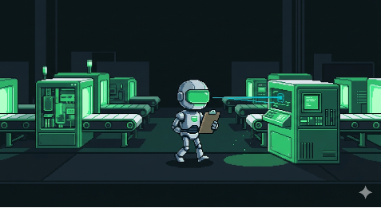
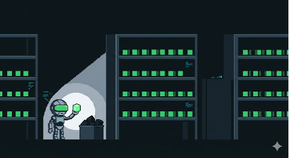
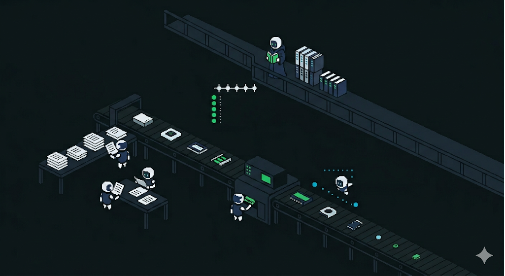
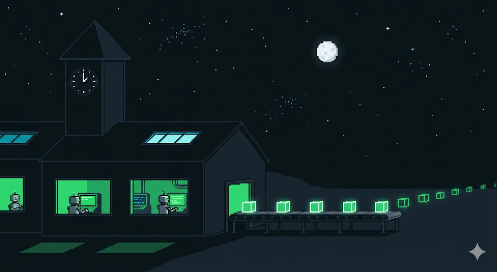
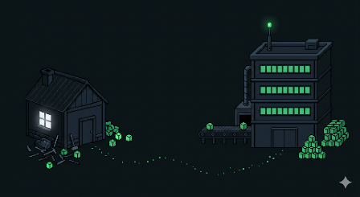

Faccio l'analista tempi e metodi da quindici anni, nel manifatturiero. Flussi, colli di bottiglia, standard, KPI. Due anni fa ho cominciato ad applicare il mestiere all'unica fabbrica che possiedo davvero: la mia.
Devo essere onesto su una cosa, perché è il punto dell'articolo: il codice dei miei progetti non lo scrivo io. Lo scrivono i modelli AI — Claude, Kimi, i modelli locali via Ollama. Io so leggere il codice, ma se mi chiedete di scrivere a mano un modulo Python pulito in mezz'ora, non sono io la persona giusta. Quello che so fare è un'altra cosa: progettare il sistema in cui quel codice viene prodotto, controllato e riusato.
C'è un pregiudizio diffuso e in buona parte meritato sul "vibe coding": funziona per il giocattolo del weekend, poi al ventesimo file diventa un caos che nessuno sa più toccare. Vero — se manca il metodo. Ma il caos da crescita disordinata non è un problema nuovo: è il problema che l'industria manifatturiera ha risolto un secolo fa. Standard, distinta base, magazzino componenti, controllo qualità, manutenzione programmata. Così ho smesso di pensare ai miei progetti come "codice" e ho cominciato a trattarli come reparti di una fabbrica.
Oggi la fabbrica ha una decina di linee attive. Ecco com'è organizzata, corsia per corsia.

Ogni fabbrica seria ha un ufficio tempi e metodi. Il mio è una manciata di documenti che ogni agente AI legge prima di toccare qualsiasi cosa: lo stack vincolante (FastAPI, DuckDB, vanilla JS/Alpine JS — niente framework, niente build step, niente CDN), le regole di struttura, e una domanda obbligatoria prima di scrivere una riga: esiste già?
Nella stessa corsia lavorano due figure che non scrivono codice ma decidono. Il Librarian è uno statuto: definisce quando un modulo merita di entrare nel magazzino comune. I criteri sono cinque ed escludenti — usato su almeno un progetto reale, generico, autonomo, testato dall'uso, palesemente migliore di ciò che c'è già.
Una libreria con codice mediocre è peggio di nessuna libreria.
weaver è il controllo qualità: un agente che gira da solo, un progetto ogni due giorni. Misura lo stato di salute di ogni linea rispetto agli standard, segnala le derive, e quando trova un pezzo di codice che si ripete propone: "questo può entrare in magazzino". Osserva e segnala, non tocca — le decisioni restano umane.

Il magazzino componenti è una libreria di moduli pronti: autenticazione, accesso dati, tabelle, client HTTP, template. Ogni nuova app interna parte da lì invece che da zero — l'indice è un file JSON che gli agenti AI leggono come una distinta base.
Accanto c'è la memoria di fabbrica: un file globale con le regole permanenti e una memoria per ogni progetto. Qualsiasi modello AI apra una sessione — oggi Claude, domani un modello locale — trova lo stesso contesto. È quello che permette di cambiare "operaio" senza perdere la conoscenza del reparto.

Gli LLM sono il reparto produttivo, e come ogni reparto ha i suoi turni. Le linee interne producono app per uso reale: gestione operativa, matching semantico di CV, ricerca documentale locale. I turni automatici sono GitHub Actions che lavorano di notte: raccolgono offerte di lavoro e notizie, generano il mio brief quotidiano, ricostruiscono la pagina del portfolio.
Un vincolo attraversa tutto: niente cloud a pagamento, dati sensibili solo in locale. Non per ideologia — per economia e per il tipo di dati che tratto. L'ho chiamata Economic Way: la soluzione più semplice che funziona, a costo marginale zero.

La produzione che merita di uscire passa da un pannello: un bot Telegram mi porta report e proposte — anche le bozze dei post come questo. Io approvo, scarto, correggo. Solo dopo, il contenuto arriva alla vetrina pubblica. Nessun automatismo pubblica nulla da solo: l'ultima firma è sempre umana.
Generazione 1 → Generazione 2

La fabbrica non è nata così. La prima generazione era una suite di strumenti da consulenza — calcolo scorte, forecasting AutoML, process mining, generatore di executive summary — costruiti uno per volta, ognuno per sé. Funzionavano, ma ogni progetto reinventava i suoi pezzi. In uno di quei progetti c'è ancora il file dove ho scritto per la prima volta le regole dell'Economic Way.
La seconda generazione è questa: stesse regole, ma industrializzate. Magazzino invece di copia-incolla, controllo qualità automatico invece di revisioni quando capita, memoria condivisa invece di ricominciare ogni sessione da zero. Non è migliorato il mio codice — è migliorato il sistema che lo produce. Che è esattamente quello che un tempi e metodi farebbe in qualsiasi stabilimento.
Cosa me ne faccio
Nel lavoro assistito dall'AI il collo di bottiglia non è più scrivere codice — è governarlo. E governare flussi di produzione è una competenza che il manifatturiero insegna meglio di qualsiasi bootcamp. Se fai il mio mestiere, sei pronto a questa stagione più di quanto pensi.
Buona parte di questo gira su un PC consumer, senza cloud a pagamento, con dati che non escono mai. Per una PMI manifatturiera che guarda all'AI con interesse e diffidenza insieme, è la dimostrazione che esiste una terza via tra "ignorare l'AI" e "mandare i dati di produzione a un fornitore americano".
La mappa qui sopra è la fabbrica vera, non uno schema idealizzato. Se vuoi vederla più da vicino — o se nel tuo stabilimento c'è un processo che meriterebbe una linea dedicata — mi trovi qui.